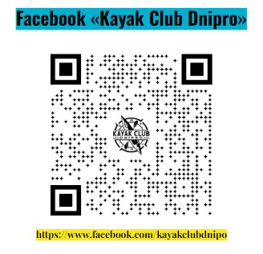

Організовані заходи з Kayak Club Dnipro - це якісний відпочинок на воді у форматі "все включено".
Маємо для вас широкий вибір відпочинку на воді у супроводі гідів-інструкторів.
- Екскурсії водним парком (2 години)
- 
- Сплави з ночівлею річками з помірною
течією: Оріль, Ворскла, Сура,Самара,
Дністер. Тривалістю від 2 до 8 днів.
- Походи вихідного дня на острів
тривалістю від 6 до 9 годин - Рафтинг - сплав по бурхливій/білій воді.
Виїздний заход на Пувденний буг. На три ночівлі
Екскурсії водним парком
Для початківців у веслуванні радимо розпочати з двогодинної екскурсії водним парком. Ви не тільки навчитеся веслувати, але й зробите чудові фото на згадку.
Цей формат рекомендується для тих, хто ніколи не керував плавзасобом. Екскурсії проводяться на надувних байдарках, які не перевертаються.
- Ранкові двогодинні екскурсії водним парком
- Вечірні двогодинні екскурсії
водним парком
Походи вихідного дня
Цей формат відпочинку часто замовляють для святкування корпоративів, сімейних урочистостей, шкільних випускних.
Щовихідних ми організовуємо відпочинок на цілий день з кейтерінгом (6-9 годин).
Сценарій включає:
- Екскурсію водним парком (1-1,5 години)
- Відпочинок на острові з чаюванням, смаколиками та обідом на багатті
- Купання, ігри, інтелектуальні розваги
Сплав та повернення відбуваються в одній локації.
Такий формат забезпечує перезавантаження та відновлення особистих ресурсів.
Для груп від 9 осіб можливий індивідуальний похід у будь-який день тижня.
Деталі за телефоном: +380966748338
- Світлини з ПВД
- Відео з ПВД
Сплави по річках з помірною течією
Пропонуємо сплави по річках Оріль, Ворскла, Сура, Самара, Дністер та іншим.
Організовуємо трансфер з точки старту до фіналу.
Відстань сплавів залежить від тривалості (15-35 км).
Досвід веслування здобувається під час подорожі під наглядом інструктора.
Веслувати по помірній течії не складно, достатньо опанувати байдарку та функції кожного учасника.
Надаємо все необхідне для комфортного відпочинку: намети, спальні мішки, каремати, посуд.
Вам лише потрібно подбати про особисті речі та засоби гігієни.
- світлини з Орілі
- Відео з Орілі
Більш екстремальні формати відпочинку на воді це рафтинг на бурхливій воді. Таку воду називають білою, бо на воді утворюється піна.
Перевірений формат відпочинку особисто засновником Kayak Club Dnipro та інструкторами.
Відпочинок цілком відповідає меті - повне перезавантаження.
Такий формат підходить сім’ям з активною життєвою позицією. За межами віртуального простору. З дітьми можна і потрібно! Досвідчені, перевірені часом і діями інструктори беруть відповідальність на себе за кожного в команді. Особисто з нами сплавлялись діти 5-6 років. Проходила пороги і наша улюблена собака Аліска (дивіться на світлинах).
Рафтинг відбувається на річці Південний буг. Зазвичай це три порога, які підкоряються за декілька разів на різноманітних плавзасобах: великий рафт на 4-12 осіб, тримісні, двомісні байдарки або одномісні пакрафти, байдарки.
Для просунутих користувачів, які з водною стихією “на ти” є в наявності спеціалізовані каяки для сплавів.
Від м. Дніпро відстань далеченька (біля 400 км), тому ми пропонуємо виділити на цей відпочинок 4 повних дні.
На локації, в кемпінгу ночівля в наметах на 3 ночі. Триразове якісне харчування, душ, нескінченна кількість чаю-кави, три вечора спілкування, пісень, музики біля великого багаття.
Зацікавлені? Дзвоніть за номером: +380966748338 почнемо вирішувати організаційні питання.
Вгору